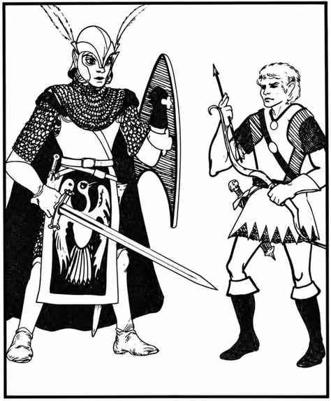
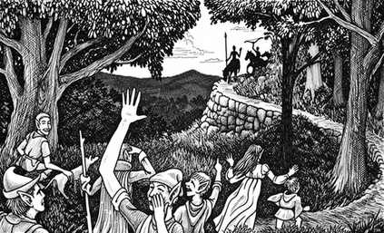

高等精灵 · Elf, High
 |
|
精灵有多种族类，包括下文介绍的海洋种族。精灵能够同时兼具两个或更多职业，例如战士／牧师；同一精灵各职业的等级可能不同。精灵的社会结构松散，由各自独立的族群组成，并效忠于一位领主（公爵、公主、国王或女王）。
每群每有 20 名精灵，就有一名战斗能力高于常人的精灵（2 或 3 级）。每遇到 40 名精灵，就有一名具备上述战斗能力、并兼有 1 或 2 级魔法师能力的精灵。若遇到 100 名或更多精灵，还会额外出现：一名 4 级战士／8 级魔法师、两名 4 级战士／5 级魔法师，以及一名 4 级战士／4 级魔法师／4 级牧师。若人数超过 160，首领将是 6 级战士／9 级魔法师和 6 级战士／6 级魔法师／6 级牧师；每位首领各有两名特别随从，分别为 4 级战士／5 级魔法师和 3 级战士／3 级魔法师／3 级牧师。这些人物均在常规人数之外。若在巢穴中遭遇，还会额外出现：每 40 名精灵有一名 4 级战士／7 级魔法师、每 40 名精灵有一名 4 级战士、一名 2 级战士／2 级魔法师／2 级牧师，以及一名 5 级战士、一名 6 级战士；此外，成年女性数量等于男性的 100%，幼儿数量为男性的 5%。
各种精灵都力求在僻静的树林或森林中筑巢。它们的巢穴通常（65%）有 2–12 只巨鹰守卫。
| 武器配置 | 概率 |
|---|---|
| 剑与弓 | 10% |
| 剑与矛 | 20% |
| 剑 | 20% |
| 双手剑 | 5% |
| 矛 | 30% |
| 弓 | 15% |
精灵通常穿鳞甲、环甲或链甲，多数持盾。高等级战士、战士／魔法师及战士／魔法师／牧师，每个职业等级各有 10% 概率拥有可供该职业使用的魔法物品。例如，4 级战士／5 级魔法师／5 级牧师有 40% 概率获得魔法护甲（可能包括盾牌，也可能只有盾牌）和／或武器；有 40% 概率获得不属于战士装备范围的其他物品；另有 50% 概率获得牧师可用的任意魔法物品。此外，魔法等级超过 4 级的精灵，若百分骰检定达到所需结果，还会拥有 2–5 件供魔法师使用的魔法物品。
若干精灵族类另有以下特征：
海精灵 Aquatic Elf。 又称海精灵，地位相当于人类社会中的人鱼。它们几乎只生活在安静、隐蔽的咸水区浓密海草床中，是海豚的好友。它们在泻湖底部和礁石中建造洞穴，在那里生活与劳作。海精灵以金属制品与陆地精灵交易海中珍物（它们不能在水下锻造金属）。每 20 名海精灵有 50% 概率伴随 1–3 只友善海豚。
海精灵使用长矛与三叉戟，通常配合渔网作战；它们不会施法，只会说精灵语。海精灵外形近似类人生物，喉部有鳃裂，皮肤呈银绿色，头发为绿色或蓝绿色。海草几乎不会阻碍它们行动；它们在海草或礁石间隐形。海精灵与鲨鱼及沙华鱼人是不共戴天的敌人；若海精灵人数占优，便会攻击其中任何一方。它们友善对待海豚与陆地精灵，对其他生物保持中立；唯独憎恶渔民，因为无知的人类常把被渔网缠住的海精灵误认作沙华鱼人并杀死。
卓尔 Drow。 “黑暗精灵”卓尔仅存在于传说中。据说它们居住在地表深处的奇异地下世界。传说卓尔的黑暗，正如精类的明亮；卓尔邪恶，正如精类善良。故事称它们战斗力弱，却擅长魔法。
灰精灵 Gray Elf（精类 Faerie）。 这是最稀有、最强大的精灵。它们比其他精灵聪明（智力骰值 +1），其中少数具备超凡智慧者可成为大法师。灰精灵十分隐居，住在与世隔绝的草原，很少与精灵以外的类人生物来往。它们通常穿链甲并持盾，人人携带剑。灰精灵常（50%）骑乘骏马（其中 70% 为鹰马，30% 为狮鹫）；也会以 3–12 只狮鹫充当守卫或坐骑。它们说高等精灵所用的语言。灰精灵要么银发琥珀眼，要么淡金发紫罗兰色眼睛；后一类通常称为精类。它们偏爱白、黄、银、金色服饰，披风常为深蓝或紫色；寿命可超过 1,500 年。
半精灵 Half-Elf。 半精灵有一半人类血统，兼有两个种族的优点。他们能与人类或精灵自由交往，只比普通精灵略高（约 5 尺 5 寸），体重约 150 磅。他们察觉秘密入口的能力与精灵相同（概率为三分之一至二分之一），并有普通红外视觉；但没有精灵使用剑与弓的优势。半精灵可同时发展两个或三个职业，例如战士／魔法师，或战士／魔法师／牧师（感知至少 13）。通常最高等级分别为 6／6／4；力量为 17 或 18 时，战士等级可达 7 或 8；智力为 17 或 18 时，魔法师等级也可达 7 或 8。因此半精灵可能成为超级英雄／术士／教士（8／8／4）。他们会说精灵所用的语言——地精语、兽人语、豺狼人语、半身人语、侏儒语与精灵语——以及阵营语和通用语。半精灵寿命为 250 年。
林精灵 Wood Elf。 又称林地精灵，十分隐居，通常（75%）避免与外界接触。与其他精灵相比，林精灵更偏中立；他们在精灵中格外强壮（所有骰值 +1，但将 19 视为 18），却不那么聪明（智力 18 视为 17）。他们通常穿钉皮甲或环甲（护甲等级 6），族群中有 50% 配弓，仅 20% 配剑，40% 使用矛。林精灵族群的巢穴通常（70%）由 2–8 只巨鸮（80%）或 1–6 只巨猞猁（20%）守卫。他们生活在原始森林与偏远林地，只说精灵语以及某些林地动物和树人的语言。林精灵肤色白皙，头发从黄色到铜红色不等，眼睛为浅棕、浅绿或榛色；喜穿红褐、红、棕与黄褐色衣物，披风通常为绿色或绿褐色。林精灵寿命长达数世纪。

在森林或草地等自然环境中，只要没有攻击，精灵便能静默移动（敌人于 1–4 点遭遇骰时会被突袭），并融入植被而隐形；须能看见隐形物体才能发现他们。精灵使用弓或剑时有命中优势；他们动作迅捷灵活，可以在同一轮内移动、射箭，再移动撤回。
精灵对各种魅惑与睡眠法术有 90% 抗性，拥有 60 尺红外视觉；察觉秘密门、暗门等的概率为三分之一至二分之一，取决于隐藏方式是否谨慎或带有魔法。
精灵会说地精、兽人、大地精、豺狼人语，以及通用语、阵营语、精灵语、半身人语和侏儒语。
外观。 精灵身材纤细、肤色白皙，深色头发、绿眼睛；通常穿淡雅的蓝、绿、紫色服装（常外罩绿灰色披风）。寿命约十二个世纪。